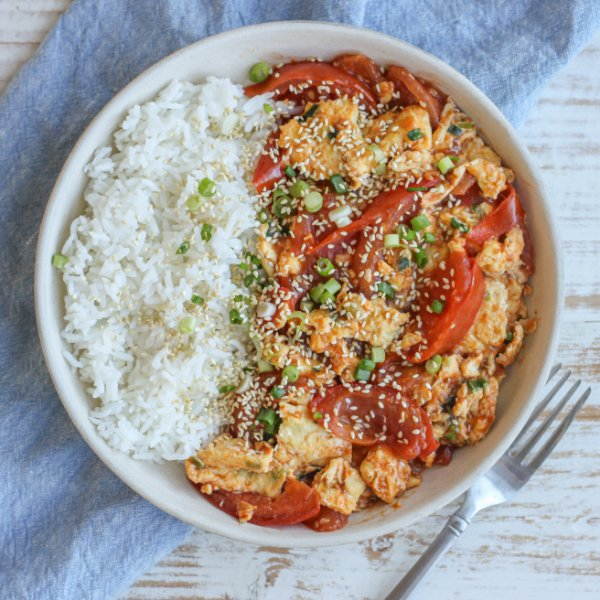

Chinese Egg, Tomato & Green Onion Stir-Fry with Sesame Seeds over Rice

Prep Time
35 min
Nutrition (per serving)
597.9 kcalCalories
25 gProtein
59.4 gCarbs
29.3 gFat
Full nutrition table
| Calories | 597.9 kcal |
| Total fat | 29.3 g |
| Saturated fat | 6.5 g |
| Trans fat | 0.1 g |
| Cholesterol | 491 mg |
| Sodium | 348.2 mg |
| Carbohydrates | 59.4 g |
| Fiber | 4.9 g |
| Sugars | 13.3 g |
| Protein | 25 g |
| Potassium | 1044 mg |
| Calcium | 145.1 mg |
| Iron | 6 mg |
| Vitamin A | 3093.7 IU |
| Vitamin C | 39.7 mg |
| Vitamin D | 108.2 IU |
Cookware
Ingredients
- 12eggs
- 2 clovesgarlic
- 1 (1 inch) pieceginger root
- 1 small bunchgreen onions (scallions)
- 1 cupjasmine rice
- 8tomatoes
- brown sugar
- cornstarch
- ketchup
- neutral vegetable oil
- salt
- sesame seeds
- soy sauce
Steps
- Using a strainer or colander, rinse the rice under cold, running water, then drain and transfer to a medium saucepan. Add water and bring the mixture to a boil over high heat.1 cup jasmine rice
2 cup water - Meanwhile, wash and dry the fresh produce.1 (1 inch) piece ginger root
8 tomatoes
1 small bunch green onions (scallions) - Once the liquid comes to a boil, stir the mixture, cover the saucepan, and reduce heat to low. Cook rice until liquid is fully absorbed, 15-18 minutes. Once done, remove rice from the heat and let it stand, still covered, for 5 minutes.
- While the rice is cooking, peel and mince ginger and garlic. Place both in a medium bowl.2 cloves garlic
- Halve tomatoes lengthwise, then cut into ½-inch thick wedges. Add to the bowl with the ginger and garlic, then set aside.
- Crack eggs into another medium bowl. Add salt, then beat with a whisk or fork until smooth.12 eggs
½ tsp salt - Preheat a large skillet over medium-high heat.
- While the skillet heats up, trim and cut green onions crosswise into thin pieces.
- Once the skillet is hot, add oil and swirl to coat the bottom. Add green onions (reserving a small handful for serving) and cook, stirring frequently, until beginning to soften, about 30 seconds.2 tbsp neutral vegetable oil
- Add eggs to the skillet and cook, stirring frequently, until just set, about 3 minutes. Remove to a plate. (Reserve skillet for the next step.)
- Return skillet to medium-high heat, add more oil, and swirl to coat the bottom. Add tomatoes and soy sauce; cook, stirring occasionally, until beginning to soften, about 3 minutes.2 tbsp neutral vegetable oil
¼ cup soy sauce - Meanwhile, place water, ketchup, cornstarch, and sugar in a small bowl. Whisk to combine the sauce.¼ cup water
¼ cup ketchup
2 tsp cornstarch
2 tsp brown sugar - Once the tomatoes have softened, reduce heat to medium. Add sauce and continue to cook, stirring frequently, until sauce thickens slightly, 2-3 minutes.
- Return eggs to the skillet, using a spoon to break them up. Continue to cook, stirring occasionally, until warmed through, 1-2 minutes more. Remove from heat.
- To serve, divide rice and stir-fry between plates or bowls. Top with reserved green onions and sesame seeds. Enjoy!4 tsp sesame seeds